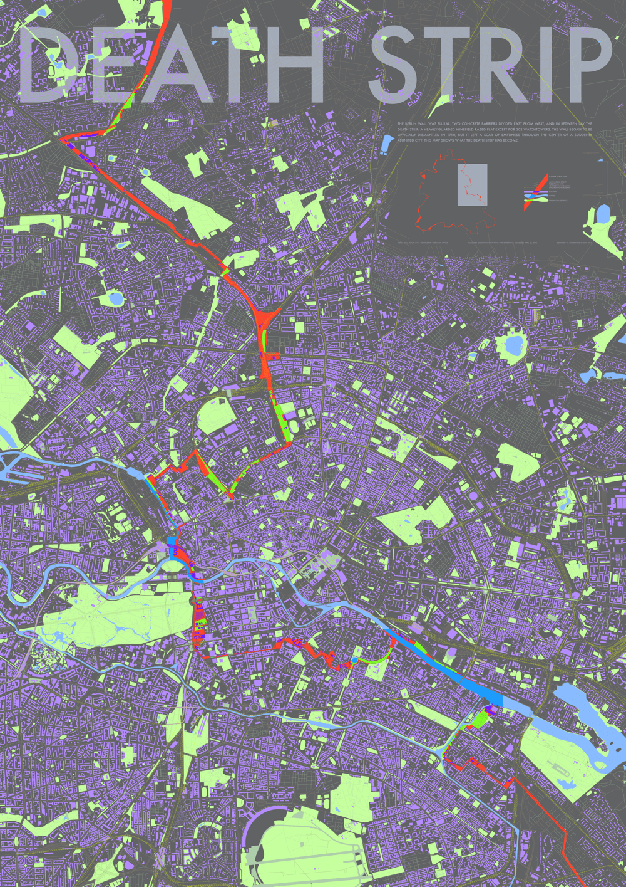
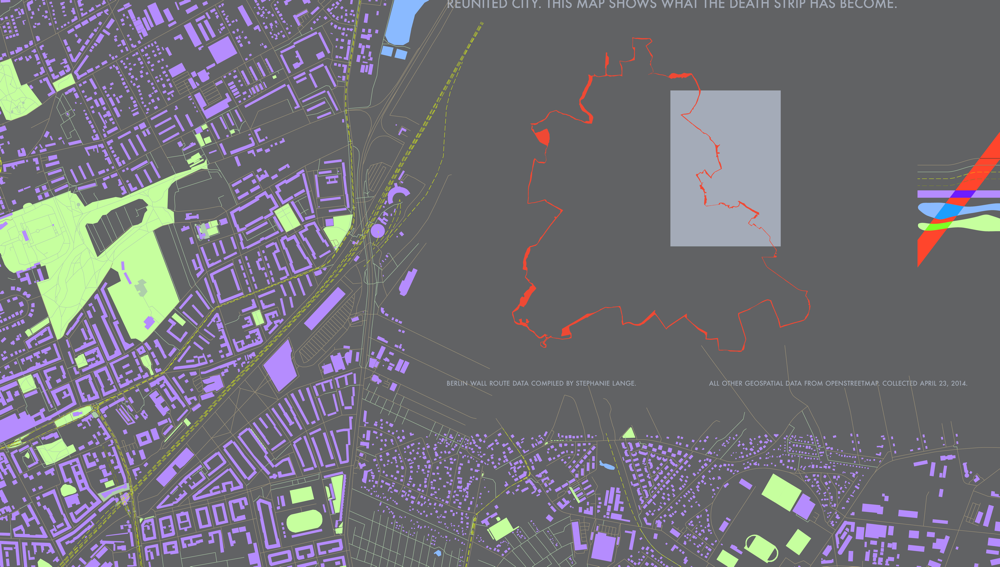
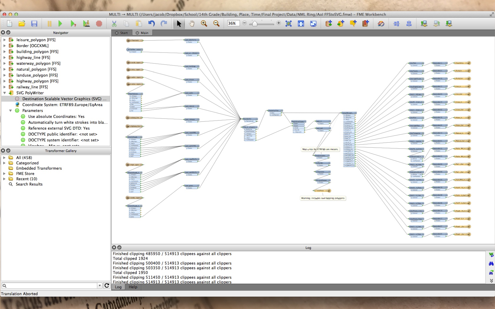
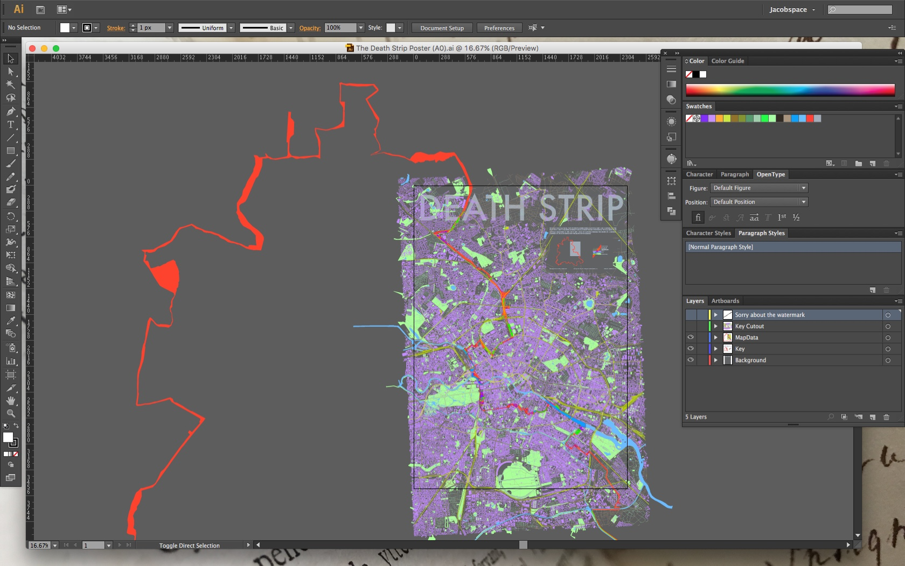
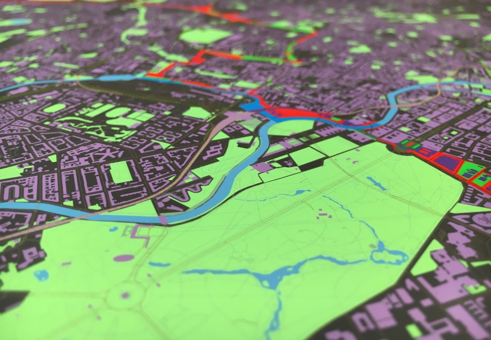
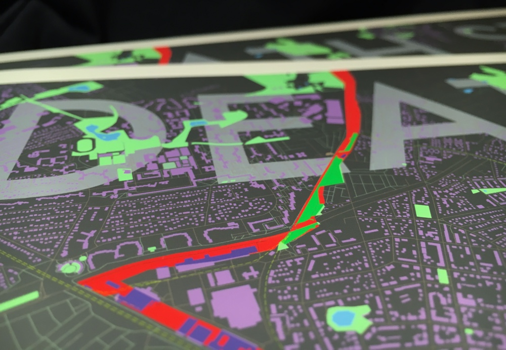

The Berlin Wall was plural. Two concrete barriers divided East from West, and in between lay the Death Strip: a heavily-guarded minefield razed flat except for 302 watchtowers. The wall began to be officially dismantled in 1990, but it left a scar of emptiness through the center of a suddenly reunited city. This map shows what the Death Strip has become.

Detail on map key
The project began with a set of OpenStreetMap layers containing the shapefiles for all buildings, water bodies, greenspace, roads, paths, and railways within an area of Berlin, compiled by and downloaded via what was then the WeoGeo Market, now called the Trimble Data Marketplace. Then there was a dream-come-true KML file containing the precise paths of both the inner and outer Berlin Walls, traced from known records and aerial imagery by an amazing person named Stephanie Lange, whose work I was able to find clinging onto decaying servers in dusty corners of the internet.

The OpenStreetMap layers and the Wall routes fed into a barely stable FME (Feature Merger Engine, from Safe) script I wrote, which—if I was lucky—managed to get the points jiving together in one projection system, determined the donut polygon formed by the inner and outer walls, merged all the layers into roughly the correct stacking order, and spat out a massive SVG file which I could import into Illustrator for designing. (Inkscape lacked the necessary stamina and, when I would try to do anything as ambitious as zoom in, would crash instantly.)

From there, a poster is just an inkjet printer a paper roll away. Matte, because it's the cheapest paper type and I like it the most so I can convince myself I would still want it if it were the most expensive paper type.

Detail on Tiergarten
In this case, Epson Premium Presentation Matte paper using an Epson Stylus Pro 4900 with a bunch of settings I never get precisely right when it comes time to print a new batch.

Detail on title
Berlin Wall route data compiled by Stephanie Lange, 2009.
All other geospatial data from OpenStreetMap, collected April 23, 2014.
Designed by Jacob Ford in May 2014.